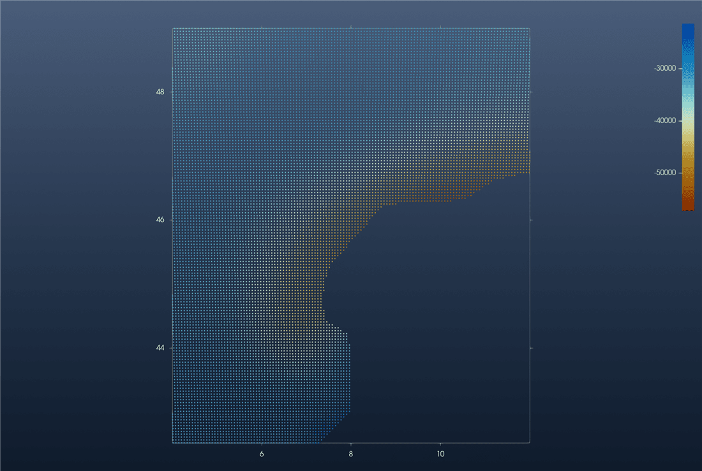
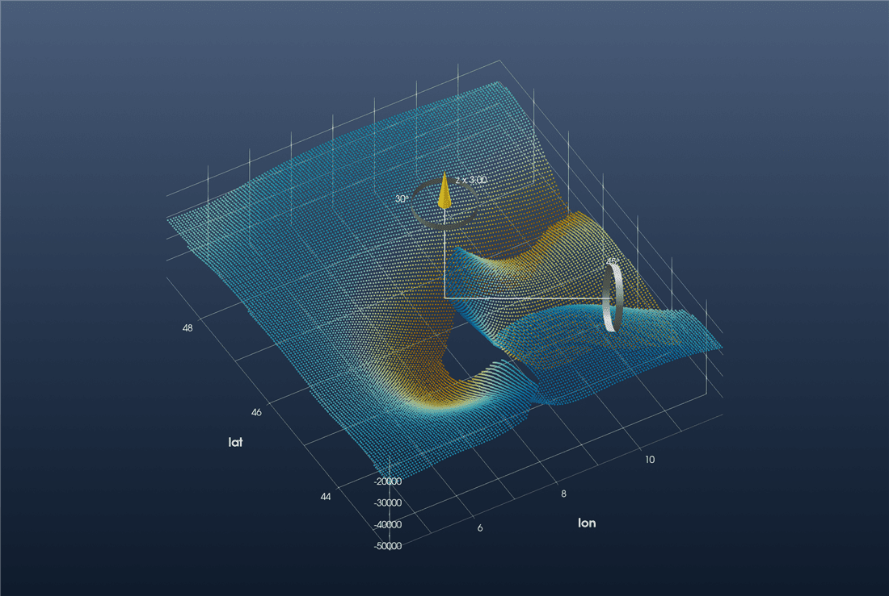
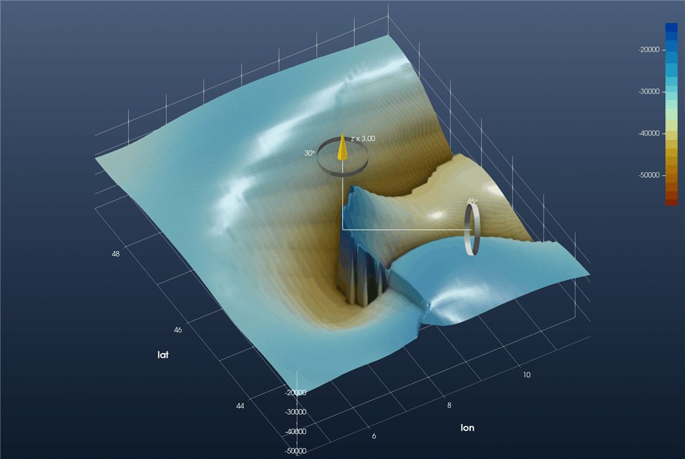

Tutorial: Moho Topography (Spada et al., 2013)
This is the GeophysicalModelGenerator.jl tutorial Visualize Moho topography redone with iGMT and plain GMT.jl commands: no ParaView, no Plots.jl.
The data are the three Moho surfaces of the western Alps and Italy of
Spada, M., I. Bianchi, E. Kissling, N. Piana Agostinetti and S. Wiemer (2013). Combining controlled-source seismology and receiver function information to derive 3-D Moho topography for Italy. Geophysical Journal International, 194(2), 1050–1068.
Moho1 is the European Moho, Moho2 the Adriatic and Moho3 the Tyrrhenian–Corsica one.
1. Read the data
Each file has 38 # comment lines, then longitude latitude depth rows, with depth in kilometres, positive down. gmtread skips the comments, and GMT's incols scales the depth column on the way in: 2+s-1000 turns it into an elevation in metres, the unit iGMT expects for z over longitude/latitude.
using InteractiveGMT, GMT
url = "https://seafile.rlp.net/d/a50881f45aa34cdeb3c0/files/?p=%2FMoho_Map_Data-WesternAlps-SpadaETAL2013_Moho"
Moho1 = gmtread(download(url * "1.txt&dl=1"), data=true, incols="0,1,2+s-1000")
Moho2 = gmtread(download(url * "2.txt&dl=1"), data=true, incols="0,1,2+s-1000")
Moho3 = gmtread(download(url * "3.txt&dl=1"), data=true, incols="0,1,2+s-1000")2. The European Moho as a map
iview(Moho1; cmap=:roma, geographic=true)The points form a 3-D cloud coloured by z. Pick 2D on the toolbar to look straight down. This is GMG's first figure, a scatter plot coloured by depth, with a colour bar:

3. The three Mohos in 3-D
iview takes the three tables together:
iview([Moho1, Moho2, Moho3]; cmap=:roma, geographic=true)Tilt the view with the mouse and raise the vertical exaggeration with the gizmo's blue ring (or View → Vertical Exaggeration…). This view is at ×3:

This is GMG's ParaView figure of the three point files, with the hole in the middle where no Moho is defined and the steps where one surface meets another.
4. One regular Moho grid
GMG grids the three sets together on 4.1:0.1:11.9 × 42.5:0.1:49. Each node takes the depth of its nearest data point. GMT's nearneighbor does exactly that with one sector (N=1). Its search radius just has to be wide enough to fill every node:
G = nearneighbor([Moho1, Moho2, Moho3], region=(4.1, 11.9, 42.5, 49), inc=0.1,
search_radius="1000k", N=1, f="g")
iview(G; cmap=:roma)G has the same 79 × 66 nodes as GMG's grid. Switch to 3D and set the exaggeration as before:

This is GMG's final figure. Where the Adriatic Moho overrides the European one, the nearest-point grid jumps from one surface to the other. That step is the Moho offset described in the paper.
Keep the grid with
gmtwrite("Spada_Moho_combined.grd", G)or with File → Save Grid… in the window.